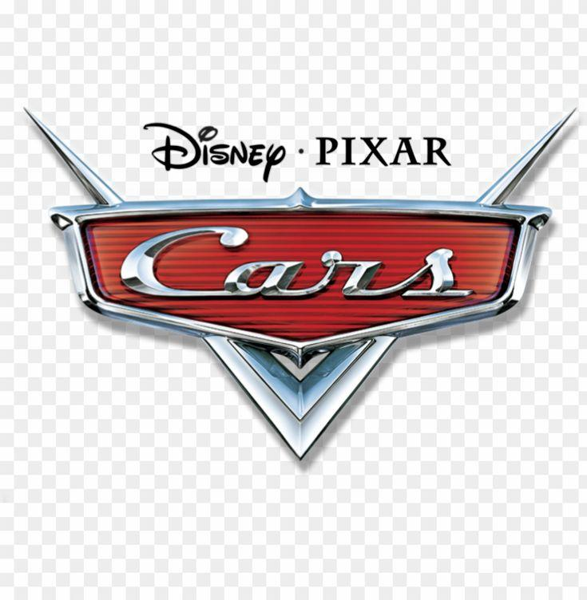

Rayo McQueen
El famoso auto de carreras que participa en el Gran Prix Mundial.

La segunda aventura de Rayo McQueen


Rayo McQueen regresa para participar en el Gran Prix Mundial, una competencia que reúne a los mejores automóviles del mundo.
Su amigo Mate lo acompaña en este viaje y termina involucrado en una aventura de espionaje internacional. Juntos descubrirán nuevos lugares y vivirán momentos llenos de acción y diversión.
El famoso auto de carreras que participa en el Gran Prix Mundial.
El mejor amigo de McQueen, que se convierte en parte de una misión secreta.
Un elegante automóvil espía que investiga una conspiración.
Una agente espía que trabaja junto a Finn y Mate.
Estreno: 2011
Estudio: Pixar Animation Studios
Director: John Lasseter
Género: Animación, aventura y comedia